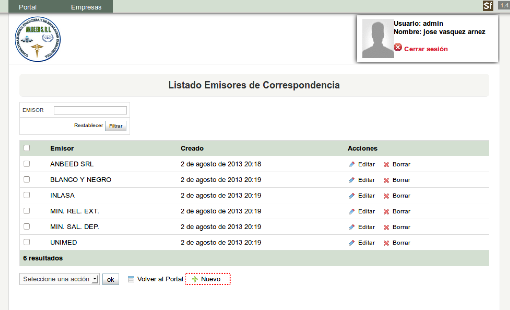

Al ingresar al listado de todos los Emisores y no contar registrado con el que necesitamos se debe registrar el tipo de documento nuevo, haciendo clic en el boton de Nuevo en la parte inferior derecha de la pantalla del sistema.

Figura 2.6. Nuevo Emisor de Correspondencia
Para registar el nuevo Emisor de Correspondencia únicamente ingresamos el nombre de éste y hacemos clic en el botón de guardar. Si quisieramos registrar mas de un Emisor de Correspondencia hacemos clic en el botón de guardar y crear otro.